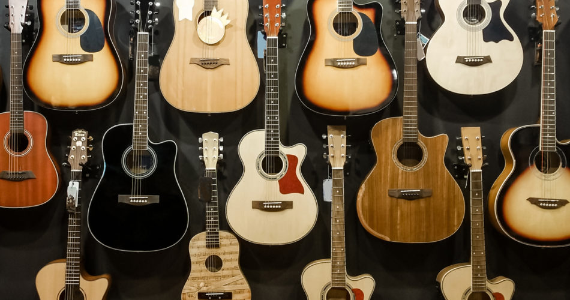
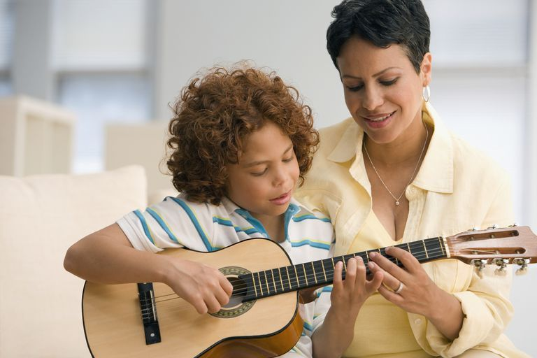

Querer aprender a tocar violão já é um grande passo, mas como fazer isso? Como começar a tocar violão? Apesar da dificuldade inicial, já que você ainda não conhece muito bem as técnicas necessárias, sendo um músico amador ou profissional, você terá uma única coisa com a qual se preocupar: as bases para aprender a tocar serão sempre as mesmas para qualquer pessoa. 
Existem diversos tipos de violão e de guitarra que contemplam os mais variados usos e finalidades. Por exemplo, modelos de violões com a caixa acústica maior, conhecidos como jumbo, possuem um volume mais alto, timbre mais grave e oferecem a famosa "encorpada" ao som. No entanto, são menos confortáveis para se tocar e para o transporte, devido ao seu tamanho.Existem ainda o violão clássico, o folk, o flat, e o thin, dentre outros. Cada um desses modelos interfere diretamente no som que o instrumento transmitirá no momento em que é tocado.
A altura do aluno influencia diretamente o modelo de violão ou guitarra a ser escolhido. Em crianças de 5 a 8 anos, entre 1,15 m e 1,35 m, a melhor escolha são os violões 1/2 em relação ao padrão. Para os alunos de 8 a 11 anos, entre 1,35 m e 1,5 m, é necessário que o violão seja 3/4 do tamanho do violão padrão.
Já para os alunos acima de 1,5 m, os mesmos podem utilizar o tamanho padrão do instrumento.Além disso, a escolha do material da corda é também importante. Basicamente, existem dois tipos de violão: de nylon e de aço. É recomedado que o iniciante aprenda a tocar com violão de nylon, pois este material é mais macio, machuca menos os dedos e facilita a execução, tornando o aprendizado mais produtivo.
conseguir cantar suas músicas preferidas ao mesmo tempo em que consegue tocá-las em seu violão (ou em sua guitarra) o máximo da prática de um instrumento? Dominar solos, fazer riffs, cantar sem desafinar ou perder o ritmo? É possível cantar e tocar violão ao mesmo tempo, mas isto requer muita prática e tempo dedicado aos estudos de canto e violão.
Para avançar neste objetivo, temos duas dicas cruciais. Primeiramente, tente dominar uma das duas técnicas necessárias para que você tenha maior estrutura para trabalhar a música. Em segundo lugar, treine e trabalhe as duas técnicas (canto e instrumento) de formas separadas. Desta forma, você se organizará da melhor maneira e poderá dedicar um tempo mais concentrado em juntar estes dois elementos.
A digitação na guitarra e no violão está relacionada à prática de exercícios repetitivos específicos para se desenvolver a coordenação motora, agilidade e velocidade nos instrumentos. A digitação envolve exercícios como o da aranha, um dos melhores para treinar a coordenação dos dedos, e o da palheta alternada, por exemplo. Os exercícios de digitação trabalham a velocidade para se conseguir tocar cada nota ou acorde sem acabar travando os dedos ao se trocar de nota, principal problema enfrentado pelos iniciantes na guitarra.
O tempo em que você vai evoluir no violão apenas irá depender de você, separar no minimo meia hora por dia a tocar violão, por mais que seja sozinho, e por ajuda em videos do youtube, é a melhor maneira de aprender, por mais que o recomendado seja ter um curso, é possivel sim aprender sozinho.